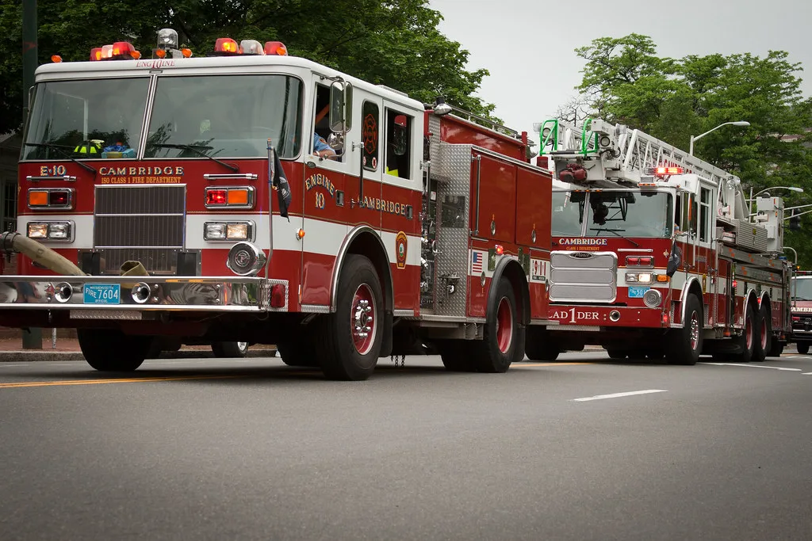

전국 민방위 훈련 실시…오후 2시 공습경보, 긴급차량 길 터주기 훈련
행정안전부는 20일 오후 2시부터 20분간 전국에서 공습 상황을 가정한 민방위 훈련을 실시한다고 밝혔다. 이번 훈련은 전시사변이나 각종 재난 등 비상사태에 대비해 국민과 민방위대가 함께 참여하는 대피 유도 훈련으로, 실제 상황 발생 시 신속하고 안전하게 대응할 수 있도록 국민 행동요령을 숙달시키는 데 목적을 두고 있다. 전국 단위로 동시에 진행되는 만큼 이 시간대에는 관공서와 대중교통, 주요 시설 등에서도 훈련에 맞춘 안내가 함께 이뤄질 예정이다.
훈련은 공습경보, 경계경보, 경보해제 순으로 진행된다. 오후 2시 정각 공습경보가 발령되면 전국에 민방공 사이렌이 울리고 경보방송과 함께 재난안전안내문자가 발송된다. 이 시각 국민들은 즉시 가까운 민방위 대피소나 인근 지하공간으로 대피해야 한다.

이어 오후 2시 15분에는 경계경보가 발령된다. 경계경보 단계에서는 대피소에서 나와 경계 태세를 유지한 채 통행할 수 있다. 오후 2시 20분 경보해제가 방송되면 모든 훈련 절차가 마무리된다.
이번 훈련에서는 특히 긴급차량 길 터주기 훈련이 중점적으로 실시된다. 도로 위 운전자는 훈련 도중 소방차나 구급차 등 긴급차량이 접근해 오면 비상등을 켜 상황을 인지했음을 알린 뒤 서행하며 길을 터줘야 한다. 행정안전부는 실제 재난 상황에서는 단 몇 분의 지체가 인명 피해로 이어질 수 있는 만큼, 골든타임을 확보하려면 평소 이 같은 대응 요령을 몸에 익혀두는 것이 중요하다고 설명했다.

서울시 등 각 지방자치단체도 이번 훈련에 발맞춰 관내 공공기관과 민간기업, 지역 주민들의 참여를 독려하고 나섰다. 훈련 시간대에는 관공서와 학교, 다중이용시설 등에서도 안내 방송에 따라 대피 훈련이 함께 진행될 예정이다. 특히 올해는 지정된 대피 시간 동안 시민들이 실제로 대피소까지 이동해 보도록 하는 실전형 훈련에 무게를 두고 있다는 설명이다.
민방위 훈련은 전시사변이나 재난 발생 시 국민이 당황하지 않고 신속하게 대응할 수 있도록 하기 위한 것으로, 매년 정기적으로 여러 차례 실시돼 왔다. 이와 별도로 민방위대에 편입된 대원을 대상으로 한 민방위 교육도 연차별로 나뉘어 운영되는데, 편입 1~2년차는 4시간의 집합교육을, 3~4년차는 2시간의 사이버교육을, 5년차 이상은 1시간의 사이버교육을 받도록 하고 있다. 이번 대피 훈련과 별개로 이러한 정기 교육 역시 국민 안전 대응력을 높이기 위한 제도로 꾸준히 운영되고 있다.
행정안전부는 이번 훈련을 앞두고 국민들에게 거주지나 근무지 주변 민방위 대피소 위치를 미리 확인해 둘 것을 당부했다. 훈련 당일 오후 2시부터 20분간은 도로 곳곳에서 일시적인 서행이나 정차가 발생할 수 있어, 당국은 운전자들에게 훈련 취지를 이해하고 협조해 줄 것을 요청했다. 특히 도심 주요 교차로와 다중이용시설 인근에서는 안내 요원이 배치돼 대피 동선을 안내할 예정이어서, 시민들은 안내에 따라 침착하게 움직이면 된다. 행정안전부 관계자는 반복적인 훈련을 통해 위기 상황에서도 국민들이 당황하지 않고 침착하게 대응할 수 있는 역량을 갖추는 것이 이번 훈련의 궁극적인 목표라고 강조했다.